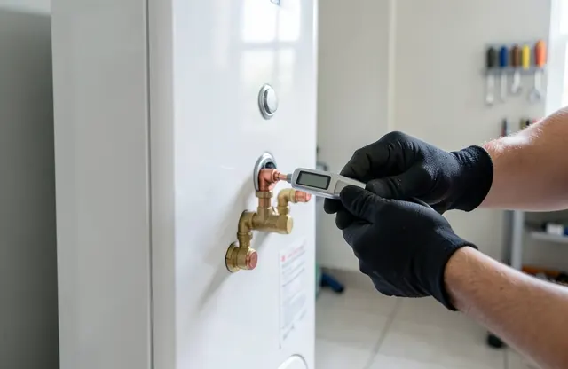

Caldaie a condensazione
Installazione e sostituzione di caldaie murali e a basamento, con analisi dei fumi, scarichi a norma e messa in servizio.
- Sostituzione della vecchia caldaia
- Manutenzione e libretto di impianto
- Controllo di efficienza energetica